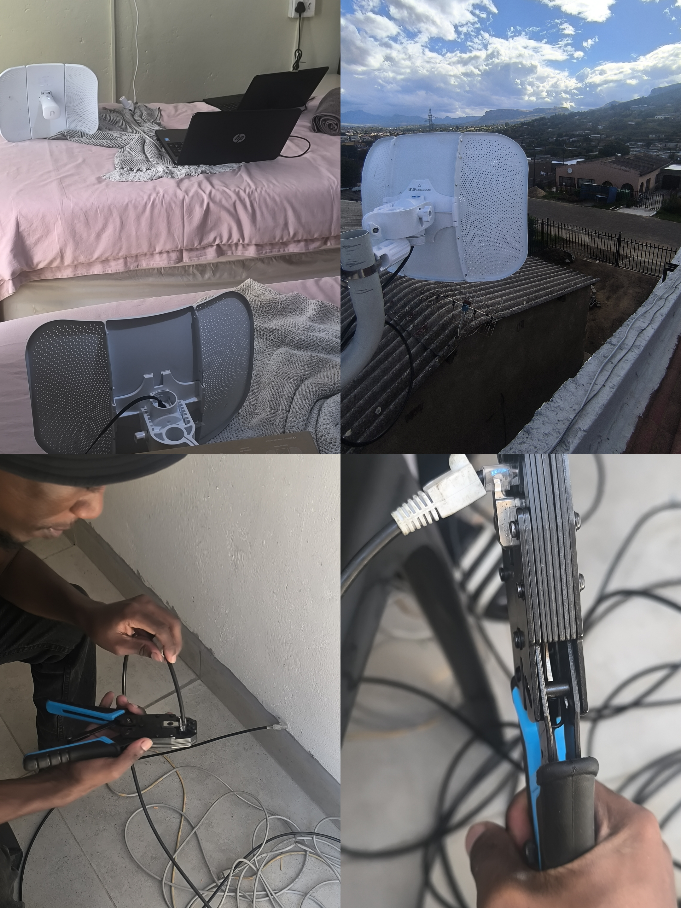

- Determine the most suitable internet connectivity option (Fibre vs LTE) for the property.
- Design a method to share internet connectivity between the two properties.
- Achieve full Wi-Fi coverage across the entire property.
- Diagnose limitations in the existing network infrastructure.
- Implement a reliable and scalable networking solution.
I began by conducting a full assessment of the existing network environment and connectivity options.
This included evaluating the current router configuration, Wi-Fi coverage, antenna placement,
and the feasibility of sharing internet connectivity between the two properties.
Wireless testing and signal analysis were performed to determine the most effective placement of network equipment and to ensure stable connectivity across the buildings.
After the assessment, I implemented several improvements to optimize the infrastructure and improve connectivity.
Key implementation tasks included:
- Testing outdoor connectivity between the two properties.
- Installing and testing a rooftop antenna to evaluate signal strength and long-range connectivity.
- Performing 360° Wi-Fi signal and speed tests to assess coverage and network performance.
- Reconfiguring routers and correcting incorrect antenna configurations.
- Resetting and configuring mesh Wi-Fi extenders to improve wireless coverage.
- Installing and terminating ethernet cables.
- Optimizing router and Wi-Fi configurations to improve reliability and reduce interference.